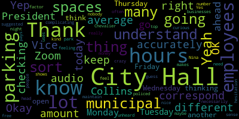
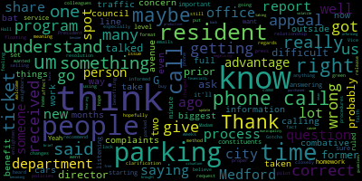

[Adam Hurtubise]: Test one, two.
[Nina Nazarian]: Adam, can you hear me?
[Adam Hurtubise]: Yes, we can.
[Lazzaro]: You can.
[Adam Hurtubise]: Yes, we can.
[Lazzaro]: Thank you. I'm checking my audio because I am on a different Zoom today. Thank you.
[Callahan]: Thank you.
[Unidentified]: Yep.
[Collins]: There will be a meeting of the Medford City Council Committee of the whole April 8 2025. This meeting will take place at 5.30pm in the city council chamber second floor Medford City Hall, 85 George B has to drive Medford ma and via zoom. Mr. Clerk, please call the role.
[Adam Hurtubise]: Councilor Callahan present. Councilor Leming, Councilor Scarpelli, Councilor Tseng. Councilor Tseng is running late. President Bears also said he's running late. Vice President Collins.
[Collins]: Present. That is five present, two running late. The meeting is called to order. The action discussion items for this evening is resolution 25-048 offered by myself, a resolution to meet on parking department surveillance report, the Green Line Extension parking zone, and parking ordinance updates. So we're going to go in, I think, that order, and we'll see how much we can get through tonight, hopefully all of it. And if not, we'll schedule a follow-up committee of the whole expeditiously to get to whatever we don't get to tonight. Sure, Councilor Scarpellile.
[Scarpelli]: The request that I had for the parking department as well. We had some concerns and I think that I put it in a resolution weeks ago. Were they not in the proper format or because we had some questions. I know it's not
[Collins]: Wait, I apologize. What was the request?
[Scarpelli]: Well, I know we talked about the G parking, which is on there, but we also talked about policies and procedures that were in question that I wanted to ask the new director, meaning the especially the fact that I've received so many phone calls in regards to the appeals process. Um, so I think that's probably I know there's more, but I think those are the two that I've had a lot of calls and emails about that, get some clarification. Gotcha.
[Collins]: Yeah, thank you. I think I'm I apologize that it wasn't listed on the action discussion items I think the intent was that we could ask those of the parking director while he's here for the GLX update.
[Scarpelli]: Thank you.
[Collins]: Great, thank you. So we'll go in that order. First to the review of the parking department surveillance impact reports and use policy. So as a quick overview, these are parts of reporting requirements that are mandated. under the Community Control over Public Surveillance Ordinance, which was ordained in 2023. All city departments that use surveillance technology must complete certain reporting requirements, they must have an impact report for the surveillance technology that they use, they must have a use policy, for the surveillance technology that they use, and this must be annually reviewed and approved by the City Council. There's also an annual report submitted by the city agency that's using the surveillance technology. and an annual report that is compiled by the city council that kind of compiles all of this information into one publicly accessible report. So this is the first time that we're having the parking department before us. They have one surveillance technology in use, I believe. And thank you for being here to present and thank you for the timely application of the impact report and use policy. Councilors had this in their packets to review before this meeting. So I'd like to invite up parking director MacDermott, to give a brief overview of anything that you'd like to say, Jermaine, to the use policy, the impact report, the technology that we're talking about are the automatic license plate readers. And if you could give an overview, you know, just you don't have to read word for word from the report, but just an overview of what these are, how they pertain to like what the surveillance element is, why the parking department uses them. That would be helpful to kick off the discussion. Thank you.
[Nina Nazarian]: Good evening, City President Collins and members of the City Council. But for formality sake, I'd like to introduce Sarah McDermott, our parking director. She's been with us since December of 2024. She's done an excellent job and pleased to have this opportunity to introduce her to this council, though some of you have had the opportunity to meet her informally. So thank you.
[SPEAKER_07]: Hello. Thank you for having me. I'm happy to discuss this technology with all of you. Currently, we have two vehicles equipped with license plate recognition technology that is used to enforce parking regulations in the city of Medford. It does so by reading the plate. The cameras are designed to read text primarily, so it will read the plate and every plate that is stored in the system. We are a permitless city, so we don't give a physical permit. The permits that the citizens purchase are tied to their license plate, and this technology reads that plate And that in combination with GPS coordinates determines whether a vehicle is parked legally in the city or not. It also will, there are several areas that are no parking or regulated as a tow zone, restricted in another way, and it will also recognize a vehicle parked in violation of those rules as well. So that's the primary function of the technology.
[Collins]: Great, thank you very much. Are there any initial questions from councilors? Seeing none, would you mind also giving an overview of the impact report that you supplied to the council? Just the headlines.
[SPEAKER_07]: Sure. Thank you. I just had to remember which was which. Sorry about that. I understand. I already went over that part. So the primary function of it, I just explained, but the reason we use this technology, there are a couple of main reasons. One is the safety of our officers. Right now, we have five total full-time parking control specialists, one of which is the foreman. Two of those full-time staff work in the evenings after it gets dark. One works 4 p.m. to 12 a.m. One works 3 a.m. to 11 a.m. And those folks are on the street on their own and enforcing rules that often cause conflict with people who disagree with receiving a citation, having the license plate recognition vehicles in place allows the officers to more safely enforce the parking rules. and it allows them to stay in their vehicle, complete the ticket, and only be out of their vehicle to place the ticket on a vehicle. The use of the LPR system is for the whole city of Bedford, but primarily right now it's only used on permitted streets. And the only reason we have to go down a street in the LPR vehicle is to enforce parking regulations for that street. The cost of the LPR system in total to be paid over the course of three years, according to the original quote, is $145,547.09. Since we began using it in early July of 2024, the citations generated by the LPR system I didn't put the total in there, but it's above $70,000 that's already been recovered in revenue specifically from the LPR enforcement. I don't believe there are any adverse effects impacting civil rights or civil liberties with the use of this product. It's designed to identify license plates. It's not. It takes still photos. It doesn't take video. people, faces caught in the background of an image inadvertently are blurred automatically by G-Techno, or sorry, by Semsen, who's the creator of the technology. Their software automatically blurs any images of faces. There's no, There's no retention of data outside of the scope of what the city requires for public record maintenance, so we can set that the data to be stored or. You know dumped at any any given in terms of that. For non citation related data, it might be a different scope, but that I haven't. Probably the same, but whatever we need to retain, we retain only for that time. At this time, the Medford Police Department has zero access to any of the data collected from the license plate recognition vehicles. I just had it set up so that The users from the Denver Police Department who have system administrative credentials because they need to create logins and edit logins and delete old users, they previously had access to the information. Though after I spoke to both traffic sergeants, they weren't aware they had access to the information until I told them. And subsequently, that's been removed. So they still have all their same access to the database and what they need to do to perform their duties. without having access to any data captured by the license plate recognition cameras.
[Collins]: Great, thank you and I appreciate that. I think that this is kind of the the intent of the city working together to put these kind of safeguards around surveillance technology so that we can make sure that there's a structure for exactly that kind of checking and rigor which is to say any access to surveillance data or surveillance technology that does not have to exist, should not exist, because it makes us all a little less safe and less cyber secure in the city. So appreciate that. I'll keep an eye out for questions from my, oh, I see one question from Councilor Callahan. Go again, Councilor Callahan.
[Callahan]: Thank you and I apologize person and don't want anybody else to get what I have. So just a cold, but my question is about whether there. Uh, is any agreement with the company that provides this information or provides this technology, um, in the contract or, uh, with. Any partner of theirs, any 3rd party that any information from that is captured by Medford cameras would go to anyone aside from Medford.
[SPEAKER_07]: At this time, no, they do not. they do not share the data collected by the city of Medford with any other entities, and nor have I heard of them being subpoenaed or having that information requested of them. Any information that the public or another company would want, I mean, well, the public would come through us and we would go through the standard process of providing public information. But as far as our data being captured and given to other entities, that's not something that GTECNA or SENS. So SENSEN created the license plate recognition cameras and the technology, the software that powers it. And that is integrated with GTECNA, who is our parking management company. So those two companies together collect and store the data. And as the data is collected by SENSEN's technology and transferred to GTECNA, it's encrypted. So it remains secure while it's transferred into GTECNA's database.
[Callahan]: Great, and to follow that up with, so it sounds like SenseN and GTEC, if I've got those correct, at some point, each of them has the data. Do you know if SenseN deletes the data once it is transferred? And do you know if GTEC has any access to the data?
[SPEAKER_07]: Both have said, I have emails from GTECNA and from SENCEN saying that data not related to a parking citation is dumped after 30 days. But that, like I said before, we might have to update with them and have them keep this information longer. When I look in my database, which is called Command Center, where all of this data is stored and where I can access it, I see every hit that the cameras have collected since its inception in July. So we still have all the information available for the public. It's just not stored by GTECNA or CENCEN, but we still could provide it to a citizen who was interested in it.
[Collins]: Thank you. Great, thank you for that answer I appreciate that and great to know that this has already been at least raised to sense energy techno. I know for myself and this brings up a question that I was going to kind of the question around the longevity of this data both locally and with G techna and sense and. I think it would be useful in the use policy to have some language that specifies like a concrete sunlighting date for the data, whether it is stored locally, and some clarity around the municipal records retention schedules. I know that those are citywide, but I think that people are generally familiar with what that actually dictates. I think it would be a helpful amendment to the use policy to see that specified how long this data is being stored. I can understand that it needs to be stored for some amount of time in case somebody wants to make an appeal, which they should be able to do, of course. But I think it'd be helpful to have some concrete language about for how long is it remaining.
[SPEAKER_07]: Okay. I think that's a fair request. I think we can update that very soon.
[Collins]: Thank you. And according, and kind of going along with that, sorry, looking back at my notes here, I think that it would also, it sounds like the information that we've received from CENCEN and GTECNA so far is that there's no indication that they have any agreements with other entities to use the data that is transferred back to them in any kind of way, which is great to hear. That's what I'd like to assume. I think it would be helpful to have that, some language around that and like, even if it's an annual confirmation of that in our contract with them written into the use policy. I think that is in a lot of cases with surveillance data and surveillance technology, you know, it's kind of the concentric circles of it all. It's not just, is it secure here? Is it secure with the people who have access to it? Is it secure with the people who created the software that allows us to get this data in the first place? So if that could be kind of a related amendment in the use policy, just that we're confirming with the people who enable the surveillance technology that it is also, not being transferred, not being sold, not being shared, and like a very specific sunlight date on their end as well. I think that would be very valuable. Okay, great. Thank you. Seeing no other further questions from councillors at this time. I just had one other. Let me pull up the section of the, this is on the, still on the use policy. For number six, you mentioned, and you spoke to this at this time, the parking department is not seeking to share access of the technology or the data with any other agency, department, bureau, division, or unit. That's great. That makes sense. I think it would be helpful just to shore up that language to make it a declaration of this is something that will not happen. Not only are we not intending for it to happen right now, this is something that we are not allowing within the parameters of this technology's use, would be a helpful amendment.
[Unidentified]: Okay. Great, thank you.
[Collins]: Any other questions, comments, concerns, compliments from other councilors on the parking department's impact report or use policy? Seeing none. So we just caught along to few hopefully quick amendments to the records retention, some confirmations there and a quick amendment to the use policy section six to state affirmatively, you know, the switch from no intent to share access to will not share access. If that can be updated and then submitted back to the council next week to be included in our annual surveillance reporting, that would be great.
[SPEAKER_07]: I think that's doable. Great, thank you.
[Collins]: Thank you so much. Is there any public comment on this item before we proceed to the next item on our agenda? Great, come on up. Thank you, Director.
[Barry Ingber]: Barry Ingber, 9 Traper Street in Bedford. Thank you, Vice President Collins, for the opportunity to speak. And thank you, Ms. Nazarian and Ms. for your good work on this. From a civil rights and civil liberties perspective, this technology and this policy is pretty close to striking exactly the balance that we're looking for, of accomplishing, gaining the efficiency that you need in order to do parking enforcement well, while protecting the civil liberties people in our city. That's what we're looking for. That's what we were looking for when we pushed for the CTOPS ordinance. And I'm glad to see that happening here. That said, I just want to do one little educational thing piece and make some minor comments, which were pretty much laid out by Vice President Collins. The educational piece is that even when you don't capture data about human beings, when you're not taking pictures of people's faces or you're erasing those from your data collection, the tracking of vehicles can be used to track people and has been used to track people. So even without what would appear to be personal data that does pose a potential civil liberties threat. Again, I think that you address it well by saying this is only to be used for parking enforcement. And that's what would concern us. So then there's the little technical pieces. One is the retention policy, which I think you're going to address. It's not clear to me why, when there's no citation involved, you would need to retain that information at all. It would seem that it should be deleted that very night. With regard to GITECNA and their affiliate organization, I think, as was stated, you need to have a contractual provision with them to make sure that the data in any way that neither you nor we want them to be using it for. And also the amendment to Section 6 that Vice President Collins pointed out. And other than that, I would say good work. Thank you.
[Collins]: Thanks, Barry. Is there any additional public comment on this item?
[Nina Nazarian]: Thank you, President Collins. The only thing I'd like to add to the conversation for purposes of information is Mr. Ingber's question as far as why the data has to be retained if it's not pertaining to a ticket. I could be mistaken about this and I think we probably need to confirm with council. But once a public record is created within the city, it is a record. Then it is required to be maintained under the Massachusetts Municipal Retention Schedule. I don't think we have ability to expedite the deletion of that data. I think we have a legal requirement to maintain that data. But again, we will look into that and we will follow through. Great.
[Collins]: Thank you. Thank you. Feel free to approach the podium.
[Barry Ingber]: Yeah, I guess. Barry Ingram, 9 Draper Street. Just to say why it is important. If it is a public record, then any member of the public can request that information, then any member of the public can utilize that to track people so that if you're taking pictures in front of a dispensary or in front of a medical establishment or in front of a mosque or in front of a church, then people can start to use that data in ways that we would not want them to use. A public record is available to bad actors as well as to people looking for their own personal private information.
[Collins]: Thank you for that context. Great, thank you all. Seeing no additional public comment on this item. Thank you, councillors, Nina, Sarah, members of the committee for the review of these documents. Thank you for, again, for your thoroughness and timeliness with this very first submission. Appreciate it, especially you being, well, not really that new to the department, but appreciate it anyway. All right, moving right along. Our second topic is updates about the Green Line Extension parking program and other related questions about the parking program. So I know you've prepared an overview. Please feel free to give us an overview of the GLX program, how it's been going so far, whatever you think is germane to the topic, and then we can entertain questions from Councilors.
[SPEAKER_07]: Sure. An hour or so ago I reviewed my inbox the prior directors inbox and the parking public email account for. Complaints specific to the g-zone. I searched the g-zone. I searched glx zone And I the only one I found was from its early inception It was a citizen concerned about his visitor passes and whether this would impact His dead-end street filling with cars and being unable to use his visitor pass. I believe there was one other formal complaint that Jim Silva, the special projects manager who helped get the G-Zone started, he mentioned during the February 25 traffic commission meeting that he had only been informed of one formal complaint. According to him, I know that's hearsay, but he also stated that there was some complaints on social media, but nothing that had come through in a formal fashion. specific to the G zone. So, having been here just for the end of the, you know, the trial period and then it's the decision in February by the traffic commission to make the G zone permanent. that's what I know about concerns related to the G zone. I personally think that zoned parking is the way to go. It doesn't have to be the whole city because I know not every part of Medford needs zoned parking. Not every part of Medford needs parking permits according to its citizens. But for the areas adjacent to the train stations, the new Green Line extension, I think it's beneficial. The other benefit that we recently, not discovered, but that came to light is when we've been working with engineering to ensure that when they have a street project and cars are displaced, that they don't receive a ticket. For example, on Willis Avenue, there's a large project underway to replace water lines, I believe it's something that's going to displace vehicles. All of Willis Avenue and the side streets that are impacted, If that was a zone, then those vehicles could park anywhere in the zone and not have to worry about whether they were going to get a ticket and the contractors and engineering and my department wouldn't have to. try and communicate, hey, you park on this street, now you have to park on this one during this project, because some people might not want to park on that street. So if they were in a zoned area, it would benefit them when there's a project underway that would displace their normal parking area. So that's another benefit recently. And that's an argument I made at the Traffic Commission meeting in February in favor of making the G Zone.
[Collins]: long term. Thank you. And just super briefly, we don't have a lot of attendees and chambers are on Zoom this evening, but just in case there are folks watching online who are kind of new to this issue, could you just in like a snapshot explain the goals of the G-Zone parking program and just in general the geographic area that it sits over?
[SPEAKER_07]: Sure. So the G-Zone is in the southern part of Medford. It is Um it runs along a long Main Street but excludes Main Street. So, Main Street is a border. George Street is a border. Um and the the south side, the border along Broadway that borders Somerville. Those are the the rough borders of the G zone and every street within that zone is included. Um and when you that when somebody who lives in the G zone purchases a parking permit, they can then park on any street on in the G kind of prevent, I don't know, I don't know if it was to prevent people from parking there with the Green Line extension opening or if it was to ensure the people living in that area that regardless of if people come here and park to commute, you will have a place on your street. Having not been here for the original meetings regarding the G zone. That's my speculation as to why it was recommended in the first place. Because the thing that's scary and like you know project progress is great when it comes to public transportation so having those, I grew up on Winchester Street I heard about this ball squared green. line stop since early 2000s and now that it's finally here it's an opportunity for people to commute not be single occupancy cars all these wonderful benefits, but it means that. People are more likely to come park in that neighborhood in order to commute on the train so. rather than, I mean, those streets were already, for the most part, permit parking, which is my understanding. And so just allowing, you know, let's say I still lived on Winchester Street. If Winchester Street filled up with commuters in the early part of that GLX opening, I could then park on Morton Avenue or New Bern or somewhere else close to my residence, and it wouldn't impact me personally as much. Thank you. So that's my understanding of the goals of it.
[Collins]: Great. Thank you so much. And as a G-Zone resident, that matches my experience as well. Councilor Scarpelli, we'll go to you for questions.
[Scarpelli]: Thank you. Thank you, Madam Vice President. Thank you for being here and welcome. I think that prior to you, I think maybe hopefully your colleagues or City Hall informed you the relationship with the former department and the residents were very, very difficult. So complaints weren't going to your office because when other complaints went to that office, they just weren't heard. There was no faith there. And I hope that changes. So the calls that we received, I think the biggest concern and the biggest issue right now is a lack of information. And I'll give you one. The phone calls I received from people saying that we're selling parking spots, so people from outside the city of Medford can buy parking in Medford and take a method residents parking spot so they can take the green line. These are the things that have been floating out there, right? Um, the report that this is still a pilot program, correct? And no one really knows that this was changed, right? This is a full time program now, and I think maybe just if we can, I would recommend just a report or a press release or anything you could share with me with the council that to enlighten us how many people have taken advantage of this program and how it's benefiting people and where they're using these parking spots. Because I think that the calls that I got really did affect some residents that when they came home, there were cars that were parked there. They're not their neighbors, they're not their cars. And they understand that there's this new parking, but don't understand it. And I think that not having an avenue where there was someone on the other line, because the feeling was, and believe me, I understand traffic and parking, I work very closely in municipality, I work with that traffic and parking department. We understand how difficult it is. And it's a very volatile situation at times. But what we were hearing at times that even when the person on, the residents and would call in, you would get negativity right off the bat, and it would become so, so combative that it really wasn't productive at all. So that's when the cause that's some of the calls we that I received. And I think that's why I brought that up back some months ago about getting some information prior to it becoming a full-time program. So I think if there's any way that, you know, you could give us just a brief report, just give us an update on how many people have taken advantage of it, how many people purchased the parking, what are our benefits financially, how we benefit from it, you know, are people taking advantage of it, and and then just informing them just the basic guidelines that this isn't free parking for people outside the city of Medford. I mean, like again, these are the things that unfortunately people didn't have the warm and fuzzies calling the former office because they just, it got right off the bat combative and it just got turned off very, very quickly. So, and don't get me wrong. I know nine out of 10 times the person calling is gonna have an attitude. Why? Because they're angry. And, um, it shouldn't shouldn't be on the person that's answering the phone. That's not fair. But again, at the same time, we are a service customer service based industry here and listening to those constituents, even when they are 1000% wrong. I think it's very important. I think that And as we turn the corner and we meet a new director I'm pretty excited about starting off fresh and making sure that there's an avenue where residents have someone they can call and, in essence, get set straight. So, if you can. through the chair if we can offer that as an amendment to to just share something with our residents that something's very simple that you know that maybe will alleviate phone calls to you where they council scott pelley a b and c said well here's the truth and send that off i think would be beneficial
[SPEAKER_07]: OK, so let me just address this first and foremost. We do not sell parking permits to any non-resident of the city of Medford. I live in Clinton, Massachusetts. I'm the parking director. Could I buy a parking pass because I want to take the train? Absolutely not. The requirements to get a resident parking pass are your registration. Your vehicle must be garaged in the city of Medford on the street. You're purchasing your permit for us, whether it's the G zone or outside the G zone. and you need proof of residence, whether it's excise tax, other tax documents, utilities, vehicle registration itself, if you are also garage there and you live there. No permit outside are issued to anybody who does not live in Medford. These are annual permits, so every year we re-verify that data before we sell another permit. lisa smith, PB, Lupita D Montoya, PB – She, Her, Hers You know, we don't targeted for so I'm not going to pull one of my parking enforcement specialists from one area to immediately go there. I asked the closest one to work it into their day, rather than because I don't want them to stop doing on one street to give you only have a few of them to correct. So, very often, I don't want to give a percentage or speculate but very often I email back that person or call them back and say hey that person actually does have a permit for your street. Now you know going forward, because perhaps someone new moved in they just got their past and some unfamiliar car so. I say more often than not, it is an illegally parked car, but there are instances where somebody reports a vehicle and it is actually allowed to be in the area it's in. So that's something to keep in mind. Also, I love listening to peoples. It might sound crazy. I've been in this industry since 2010. I've heard it all. I've spoken to and emailed with several constituents who I have heard have had frequent complaints or frequent issues and it's fulfilling when I can get them to understand maybe another perspective. You know, people might not understand that we need meters. I had a woman asking about the meters at the library because the library doesn't have enough parking, from what I hear, for its clients, and I had to Trying to explain, you know, it's not just the library. We also have other businesses, other businesses in Medford that need that short term parking so they can have customers as well. So I really enjoy taking those calls and getting those emails and trying to satisfy people who in the past haven't gotten the satisfaction that they're looking for. I find that so often, and I believe I mentioned this during my interview process, that a lot of them just want to be heard and they don't necessarily need a problem solved per se, but they want to feel like somebody at least recognizes the issue. So I try and take time out of my day to do that for people. if they communicate with me directly. Could there be better communication by email from the rest of the staff? That is something I can look into and address and see, maybe look at some prior, some past emails, see how the tone is, see if it's maybe a little cold, if we can warm it up and make people feel more heard.
[Scarpelli]: So that's- I appreciate that. Sure. I think that'll go a long way. And like I said, you know, I think you hit the nail on the head when you said a lot of times people just want to be listened to and then told, you know, thank you, but you're wrong and move on. So I think that again, I think that that's important, but that's, I think for the G zone, I think you, you know, answering that question and publicly and although no one's really here and no one's on zoom but it'll be nice to get something that we can share with our constituents if they ask because again um people don't like to search people don't like to do their homework they just rather call and complain and have someone else do the homework so um so if that's possible that'd be a great assistance to at least myself. Thank you.
[SPEAKER_07]: And I mean any of any of the council members are welcome to reach out to me directly regarding parking, careful. Thank you. Sure.
[Collins]: Thank you, Director I agree I think that I think will be worthwhile I there is some great information about the green line zone on the city website, it's been up there for a while and I think the Councilors point to sound that it people like things to be really at their fingertips, and it has been a while since the G zone was piloted, since it was codified as permanent. I think that, you know, more information is always better to make sure that it reaches people here in this, you know, rather fragmented information environment that we have here in Medford. And I will say for myself, again, as a resident of the G zone, I really like it. I think it's a huge improvement. You know, it's not my job to proselytize for the zoned parking, but I find myself wanting to just because living in that neighborhood. I think it's a vast improvement and I think it would be helpful for there to be more readily available information about what are the reasons why this was instituted in the first place to help people understand the pros in addition to the changes or some of their perceived cons as we continue to get used to it.
[SPEAKER_07]: Okay. I think that's a fair request and I think you're correct that the information on our website regarding the G-Zone needs updating and if nothing else, to say that it was made permanent by the Traffic Commission. So that is noted. I will make sure to update that information for the public.
[Collins]: Great. Thank you. Is there any other questions or comments from Councilors on the G-Zone or other related parking enforcement? Seeing none, and none on Zoom, is there any public comment or questions about this topic? Seeing none, thank you so much. Really appreciate the overview. And thank you for your work in the parking department, an undersung but important department in our city.
[SPEAKER_07]: Thank you for that acknowledgment.
[Collins]: All right, on to our last topic for the evening. We are making good time. This bodes well for the rest of our evening, knock on wood. The third topic is the proposed ordinance change. Let me, sorry, I X'd out of my agenda, but I think had the information about that. Yes, so this is a proposed amendment from the city administration regarding Chapter 78 Article 3 Division 2 Subsection 1 Section 78-173 pertaining to municipal employee and business parking in back of City Hall. Would you like to give an overview of the what and the why of this proposed amendment?
[SPEAKER_07]: Sure. This came up just since I began in December. Shortly after I began in December, as you all may know, there was a discovery made in the commuter lot there between Clippership Drive and I-93, which may require some excavation in the future, which was concerning because that lot is used as an overflow lot for City Hall employees who may or may not find a space in the back of City Hall because the spaces are often used not just by City Hall visitors, but also both City Hall employees use it, City Hall visitors use it. Legally, they're allowed to, but we also have people who go to Atrius Health on a regular basis. We have people who park there and hop on the 94 or the 96 bus and leave their vehicles there all day. So the concern is that with an overflow lot potentially being removed, that city hall employees may not have adequate space to park their vehicles, depending on how much space is removed from that lot. So I think that was the beginning of the move to make the spaces behind City Hall for City Hall employees only, leaving the spaces out front for visitors. And then the lot up here is still available for now. And the lot where the buses pick up are also pay-to-park areas. They're metered parking. So those could also be used by visitors if they were willing to pay $1 for an hour or, you know, however long they need it. So that was what started it, I guess.
[Collins]: If I'm reading this correctly, this would be to repeal the use of one of these lots as the overflow lot.
[SPEAKER_07]: It would be to repeal the use of the lot behind City Hall, directly behind City Hall for municipal visitors and make the spaces for City Hall employees. With the exception of the electric vehicle charging spaces, the handicap accessible spaces, and the veteran space, those would remain accessible to all who meet the requirements of those spaces, but any other regular space between Clippership, City Hall Mall, the lot behind that lot, and then City Hall itself, those spaces would be for City Hall employees only during City Hall hours. So outside of City Hall hours, they could still be used by visitors to Bedford Square.
[Collins]: OK, thank you. And sorry, just to double confirm, the lot that's being repealed for visitor use.
[SPEAKER_07]: Is it the one directly abutting City Hall and back of us or is the one directly behind City Hall where the buses pick up behind City Hall is the next lot so that lot wouldn't change. Okay, it's just.
[Collins]: It's just the area immediately around City Hall in back is just for City Hall employees.
[SPEAKER_07]: Correct.
[Collins]: And then visitors can park like the next lot over.
[SPEAKER_07]: Or in the front or in the front. Okay, yes.
[Collins]: Got it.
[SPEAKER_07]: Sorry, I just, it's fine.
[Collins]: I really need a diagram in front of me at all times. Great, thank you. So that would be repealing the visitor parking during business hours provision, so it remains as only an overflow lot for municipal employees. Correct. Great. Any questions or comments from my fellow councillors on this proposed change? Oh, thank you. Sorry, my computer screen is not big enough. Go ahead, Councilor Lazzaro.
[Lazzaro]: Thank you.
[Collins]: Sorry, can you hear me?
[Lazzaro]: Yep. Okay. Do we know how many City Hall employees are at City Hall on average during City Hall hours and how many parking spaces? Does it correspond accurately? Is it the right amount of spaces?
[SPEAKER_07]: I don't know the number of City Hall employees that regularly come to City Hall Monday through Friday, but there are, I think, 96 spaces. available in that lot, which may include the handicap accessible spaces, there are four or five, I think there's actually four. So between 90 and 95 spaces that would be taken away from visitors if this were to be passed.
[Lazzaro]: And is it OK if I keep going, Vice President Collins? Yeah, go ahead. So the hours are 8.30 to 4.30 Monday, Tuesday, Thursday, 8.30 to 7.30 on Wednesday, and then 8.30 to 12.30 on Friday. I think, so it would just be those hours only city hall employees. And then the other hours, it would be open parking. The thing that I'm thinking about is there's another complicating factor, which is that often. businesses like the Chevalier uses the City Hall lot as their sort of like suggested municipal parking for people going to shows at night. It is kind of a nice thing to have a municipal lot that doesn't really get policed. It's also sort of unheard of. To have a lot that's free that nobody pays money to park at so I understand why we wouldn't necessarily, you know, need to maintain that. So. I don't know. I'm feeling some hesitation in myself. But I guess I would be curious if we had the number of employees who are in City Hall. I feel like Nina would know that. No? Not off the top of your head, maybe.
[Nina Nazarian]: Thank you. I don't know that information off the top of my head. I was thinking of potentially counting and potentially giving some sort of ballpark estimate, the number of employees we have in City Hall. The couple of things to say, as it pertains to your question, Councilor Lazzaro, is we, just to, it's already been stated, but we do find that if an employee approaches the City Hall lot, let's say any time beyond the window of maybe 9.30 or 10 a.m., the lot is chock full. And we know that there are a number of, I can tell you, For my own viewing there's definitely one person who takes the 94 bus, I can describe the vehicle I don't think that's necessary here. But, you know, we can't enforce that right now. We can't, you know, deter that individual whoever that may be from parking behind City Hall because we don't have any. traffic commission requirements that are in place. And in the part of this entire process, we realized that that didn't exist. And that was kind of how we were approaching resolving that issue. And then our parking director identified and came to realize that there was an ordinance that also spoke to the same issue. And that's, I guess, all I wanted to really mention here in all of this, because it's really something that creates an obstacle for employees as they're coming back from meetings at a different facility, or if they're coming in late for any reason, or have, you know, let's say we have a situation where someone's taking a half day and they're trying to come back. It creates an obstacle into getting to work, truly.
[Lazzaro]: I understand. That's crazy. Yeah, that makes sense. Thank you.
[SPEAKER_07]: And might I just add that since I began in December, I've had multiple City Hall employees ask me, when are we going to change the slot? What's going on with that? I've heard this was happening. So I think it's something that the employees want, not that that's necessarily a deciding factor, but it is something that I've heard quite a bit about from employees since I began.
[Unidentified]: Great.
[Collins]: Thank you for that overview. I think this is reasonable. I think we certainly have a lot of parking in the square very close to City Hall that people can also take advantage of I hope that decreases all over time, and as our transit system improves and you don't need to have quite so much parking surrounding City Hall but given that we now do I don't think that this is. a bad change to make. I would request, I'm sure that this is, I'm absolutely positive this is a policy you've discussed already. I think it would be great to see a 30 day warning period before tickets are given out, just so that people can adjust their habits. I'm seeing nods, so I see this as something you were already thinking about.
[SPEAKER_07]: Yeah, we're definitely going to communicate first, And then there will be at least 30 day communication, that's, that's reasonable. And then, in addition to that we wouldn't just on that 31st day go out and bang out a bunch of parking citations we would issue some warnings let people know the regulars could catch on like oh I can't get away with this anymore. And then hopefully they would find another place to go without actually having to pay a fine if they receive a warning. So the plan, I believe, I discussed with Steve, the communications director, to do two weeks of warnings after the initial communication, which I believe we were going to communicate for two weeks, but we can extend that. That's not a problem. So yeah, and then a couple of weeks of warnings before any actual tickets are written. And I currently have every City Hall employee who has submitted their registration to the parking department is entered as a city employee. And so they're all ready to go. So our parking staff can identify who's who out there.
[Collins]: That's great. Thank you. Sounds like the ducks are in a row on this. Are there any additional questions or comments from Councilors on this proposed change? Seeing none. Thank you so much for the overview. So let me just get organized here with the motions to come out of this meeting. I think that we will need a few emotion to receive and place on file, the impact report and use policy for the parking department, and that's of course this doesn't need to be in motion but that's what the expectation that the updated version will be coming this week ahead of the annual reporting deadline. A second motion to. request more communication from the parking department and the city administration about the G zone parking program to distribute to residents. Is there anything you wanted to add to that Councilor Scarpelli? I think my colleagues like to second that. Great, thank you so much. And then I think we could use a third motion to approve, to report out of committee. Thank you. That's the motion to let's finish the sentence report out of committee. The proposed repeal of chapter 73, article three, division two, subsection one, section 78, one 73. We'll let the clerk catch up and copy and paste from the agenda. Okay, I will restate to you in just a sec. Okay, so these three motions are all by Councilor Scarpelli and seconded by Councilor Tseng. They are to receive and place on file the parking department's impact report and use policy for ALPRs, to request more information and communications on the G-Zone parking program from the parking director and city administration, and to report out of committee the repeal of the ordinance. and I can send you this text if that's helpful, Mr. Clerk. Great, will do. All right, on the motion by Councilor Scarpelli, seconded by Councilor Tseng. Mr. Clerk, when you're ready, please call the roll.
[Adam Hurtubise]: On the first motion. That's a Callahan.
[Callahan]: Yes.
[Adam Hurtubise]: Councils are.
[Lazzaro]: Yes.
[Adam Hurtubise]: That's a lemon. That's a scrub Kelly. That's a saying, President Bears. Vice President calls.
[Collins]: Yes. So seven here, seven in favor zero opposed motion passes.
[Scarpelli]: Go ahead. One other topic I know that I want to address this evening, maybe just as a starting point I know that the process we have and correct me if I'm wrong for appealing a ticket that the resident that would get the ticket would appeal in a certain amount of time. And then it would be ruled on. And then if it's ruled not in their favor, then there's an option for them to go to the next level. Correct. And that would go to a state level where there's a higher fee. Is that okay? Yeah, correct.
[SPEAKER_07]: And generally, the fine that is implemented is significantly less than the court costs to take it to the next step. So I have yet, in my four months here, to see anybody go that route. And I hate, personally, hate's a strong word. I don't love having to tell them that that's their only recourse. But I'm happy to discuss this issue. I would love to have some time to prepare and show what we have.
[Scarpelli]: So why don't we do that?
[SPEAKER_07]: But if I can give you a quick rundown or answer your questions.
[Scarpelli]: Yeah, because I think it'll be maybe just a discussion with the two of us. I think that because the, just so you know, and FDA, so the conversation I've been getting from residents is they feel like it's a trap that There really isn't anybody listening when it comes time to appeal a ticket that, um, if they peel a ticket at noon at 1215, they're getting denied right away. And it seems like, you know, not knowing who's doing the appeals process and stuff like that. So I think it's, it's something that that's, I'm getting a lot of phone calls with that saying. I got a ticket. This is why the reasoning when you know, is it true what they said? Probably not.
[SPEAKER_07]: But when you hear some of them do have a very quick turnaround, because it's obvious that the citation is valid. And many cases, the person is pleading for sympathy. Hey, I or I was just here one time. How come I don't get a warning? that kind of that kind of thing, which is not if we will review the citation, it doesn't take a very long time. We can make sure the plate is entered correctly, that the location is correct and that verify that it is a valid citation in a very quick manner, which then takes that off of the clerk's plates, which to answer another question, the parking clerks are responsible for the electronic appeals. If somebody files an appeal in person or mails one in, then it goes to my desk. So we divide that duty. Among the, I think it's, there are two of the clerks they handle it one of them. Our part time clerk generally stays out of the appeals, so it's the two full time clerks and myself who make the decisions based on the evidence provided by the citizen, and I will say, Councilors barbelly very often. Just in the four months I've been here, we get an appeal whether it's electronic or in person, and there's no evidence provided like let's say for example that I paid my meter, and I still got a ticket. So when I file my appeal there's no attachment to show the receipt, and then we'll deny the appeal. And then they'll say, hey, well, here's my receipt, which should have gone on in the first place. And we will honor that. I mean, I will. If I see that come in, OK. But next time, please provide this. Because there have been some issues with GTECNA that I have identified and resolved regarding uploads to the appeals. If you upload an electronic Image it usually shows you what you've uploaded in text, you know dot pdf As as it were as it were but that text was coming up white So people couldn't see if their attachment was there we've since fixed that I've gotten complaints in my time here about the website listed on the back of the ticket itself not working for everybody So I just reordered a whole new batch of paper with an updated website to make that process easier so I just If there are issues that are legitimate, we will address them. But as far as I can tell the way we're processing the appeals is by the letter of the law for mass general law we get them. We process them within 10 days we get them. We give them 21 days, we accept up till that 21st day. Any and then even some I have overturned even after denial once evidence is presented, specifically because I knew there was an issue with uploading electronic documents. So, but I have no problem maintaining that. policy of reviewing data after the fact, if it's a legitimate appeal.
[Scarpelli]: So if I can, obviously I've asked for this months ago, it wasn't on the agenda. So like I said, maybe I'll set something up for a 15 minute phone call or 10 minute phone call, just to touch base so I can give you specifics so you can understand what I'm saying.
[SPEAKER_07]: Sure. And then if I need more time to look into something after that call, by all means, I'm happy to do that. Thank you so much.
[Collins]: Thank you, Councilor Scarpelli. We'll go to President Bears and then we'll circle back to our final two motions.
[Bears]: Thank you, President Chair Collins. I just want to apologize to Councilor Scarpelli. That was my omission of putting this on the agenda. I do think a paper did go up at some point to the mayor's office that included the information. So that's on the agenda. That's on me. But I think it went up with records whenever you made that.
[Collins]: Great. Thank you, President Bears. Seeing no further comments or hands on zoom. So we have a couple other motions to vote through. So the second one is the request for more info and communications on G zone parking program from the parking director and city administration, Mr. Clark whenever you're ready please call the role.
[Adam Hurtubise]: Councilor Lazzaro? Yes. Councilor Leming? Yes. Councilor Scarpelli? Yes. Councilor Tseng? Yes. President Bears? Yes. Vice President Collins?
[Collins]: Yes. Seven in favor, zero opposed. The motion passes. And on the final motion to report out of committee, the ordinance repeal that we just discussed. Whenever you're ready.
[Adam Hurtubise]: Councilor Callahan? Yes. Councilor Lazzaro?
[Collins]: Yes.
[Adam Hurtubise]: Councilor Leming? Yes. Councilor Scarpelli, Councilor Tseng, President Bears, Vice President Collins.
[Collins]: Yes, seven in favor, none opposed. The motion passes. Thank you so much for, yep, go ahead.
[Nina Nazarian]: Thank you, Vice President Collins. A procedural question. I assume that now that the repeal has been reported at a committee, it would go on the April 29th meeting and considering the limited questions and concerns, is it fair to assume that probably representation wouldn't be required at that meeting or just trying to get a feel from the council?
[Collins]: I think that's probably fair. I don't want to speak for other Councilors. I doubt that I will have further questions on the topic. If I do, I'll try to email them ahead of time and encourage other Councilors to do so. So that's the best I got. Understood. Thank you very much. Thank you. Thank you all. Great. Thank you so much for your presence with us for this multi-topic committee of the whole. Really appreciate your time and all your hard work. Is there a motion to adjourn? On the motion by Councilor Tseng to adjourn, seconded by President Bears. Mr. Clerk, please call the roll.
|
total time: 2.05 minutes total words: 259  |
total time: 0.79 minutes total words: 128 |
total time: 17.77 minutes total words: 2760 |
total time: 7.01 minutes total words: 1276  |
|
total time: 0.32 minutes total words: 62 |
|||
{kind=link}
{kind=link}
{kind=link}
{kind=link}
{kind=link}